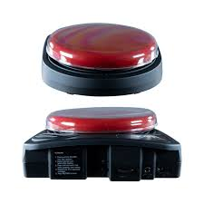

9th MAY 2023
Initially the interns were tasked with performing their own research and learning about various AAC devices available in the market and to come up with a low to mid tech AAC device.
- Learn about AAC devices.
- Generated ideas of a prototype AAC device.
- Single button AAC device capable of recording the required audio and play it back on demand.
- Simple design to not overstimulate the users.
- Some form of force feedback on activation.
- Create a presentation on the prototype.
The prototype is based on the existing design of the BIGmack communictation device:
